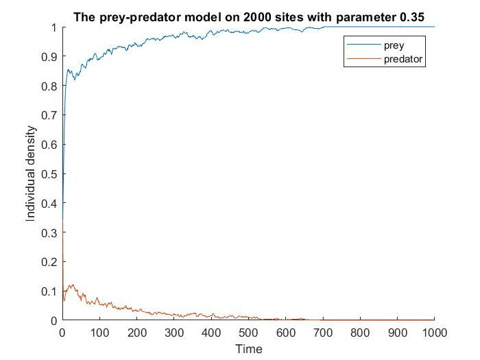
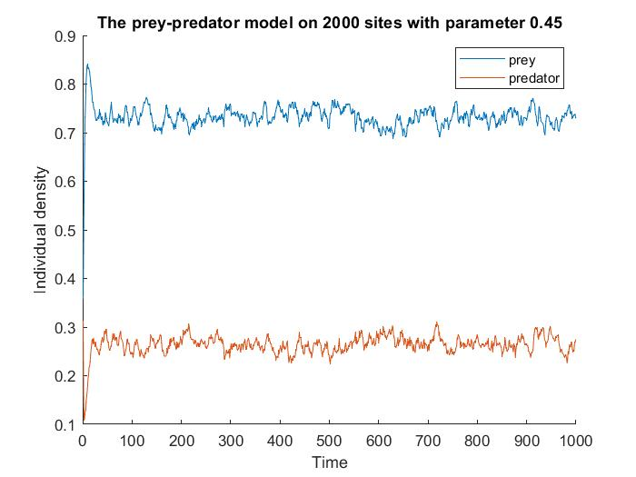

Fourier Analysis for One-Dimensional Prey-Predator Lattice Model
Model
Consider a one-dimensional lattice with \(L\) sites, where each site can be in one of four states: empty, occupied by a prey, occupied by a predator, or occupied by both a prey and a predator. The dynamics of the model are governed by the following algorithm:
Initialize the lattice with a uniform distribution of preys and predators, ensuring that no site is initially occupied by both a prey and a predator.
Prey Reproduction: Implement this step with probability \(r\). At each time step, for every site occupied by a prey, the prey can reproduce by adding an offspring to a neighboring site that is either empty or occupied by a predator (i.e., a site without a prey).
Predator Predation and Reproduction: Implement these step with probability \(1-r\). At each time step, if a site is occupied by both a prey and a predator, the predator consumes the prey. Subsequently, the predator may reproduce by adding an offspring to a neighboring site that is either empty or occupied by a prey (i.e., a site without a predator).
Predator Death: Implement these step with probability \(1-r\). At each time step, if a site is occupied by a predator only (with no prey present), the predator dies due to starvation.
The parameter of this model is \(r\), the critical point of this model is \(r\approx 0.177\). When
\(r < 0.177 \), the system is in the absorbing phase and the predators will ultimately extinct. When
\(r > 0.177 \), the system is in the active phase and the predators will keep competing.


Left: The absorbing phase of the prey-predator model (Extinction) Right: The active phase of the prey-predator model (Competition)